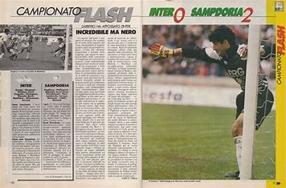
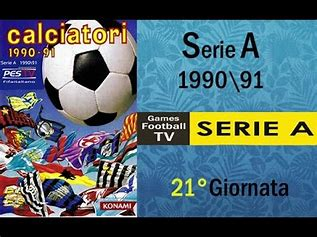

Il campionato di calcio italiano ha avuto inizio nel 1898, con la vittoria del Genoa. Inizialmente il torneo era dominato da squadre del nord, come il Genoa, il Milan e la Juventus, mentre il sistema era ad eliminazione diretta. Nel 1914 il campionato si espanse a livello nazionale, includendo anche il centro-sud. Negli anni successivi, squadre come la Pro Vercelli e il Genoa dominarono, mentre l’Inter ottenne il primo titolo nel 1910, seguito dal dominio della Juventus negli anni '20 e '30. Nel periodo tra le due guerre, il campionato si strutturò ulteriormente e il girone unico venne introdotto nel 1930. La Juventus divenne una delle squadre più forti con cinque titoli consecutivi, mentre l’Inter e il Bologna conquistarono altri successi. Durante gli anni '40, il Torino emerse come una delle squadre più potenti, ma la sua ascesa fu tragicamente interrotta dal disastro aereo di Superga nel 1949. Negli anni '50, Milan, Inter e Juventus dominarono, con l'inclusione anche di squadre come la Fiorentina e il Bologna, che vinsero titoli. Negli anni '60, il Milan di Nereo Rocco e la Juventus con Giampiero Boniperti conquistarono successi nazionali e internazionali. Nel decennio successivo, la Juventus continuò il suo dominio, affermandosi come una delle squadre più forti. Gli anni '70 videro il ritorno di squadre come il Cagliari e la Lazio, mentre la Juventus continuava a vincere. Il Napoli di Maradona portò un nuovo ciclo vincente negli anni '80, insieme al Verona che sorprese tutti. Il Milan di Berlusconi negli anni '90 si affermò come una delle potenze del calcio italiano, vincendo sotto la guida di Sacchi. Nel nuovo millennio, la Juventus tornò a dominare, vincendo il titolo nel 2002 e 2003, mentre nel 2006 esplose lo scandalo Calciopoli, che portò l’Inter a vincere. La Juventus riconquistò il trono nel 2012, iniziando un ciclo che culminò nel 2013 con il suo 30° scudetto, sempre sotto la guida di Antonio Conte